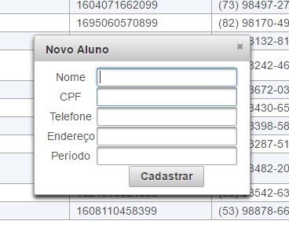
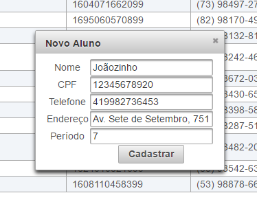
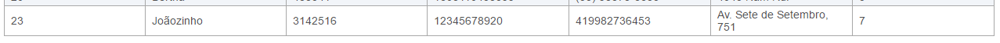

Inserção de Registros
Agora veremos um exemplo de como executar ações assíncronas com componentes web via primefaces/jsf.
Para realizar uma Ação via botão adicionamos um commandButton na nossa página web:
<p:commandButton value="Cadastrar novo Aluno" process="@this" update=":cadastro:novo-aluno-dialog"
oncomplete="PF('novo-aluno-widget').show()" />
O atributo "update" indica que estaremos fazendo alguma mudança visual na página, sendo que a parte ":cadastro:" é uma referência à outro form (veja em seguida).
O atributo "oncomplete" serve para realizar uma ação quando o botão for clicado.
O atributo "pop-up" servirá para abrir uma caixa de diálogo com os campos para cadastro:
<h:form id="cadastro">
<p:dialog header="Novo Aluno" widgetVar="novo-aluno-widget" id="novo-aluno-dialog"
resizable="false" modal="false" closeOnEscape="true">
<p:outputPanel style="text-align:center">
<h:panelGrid columns="2" columnClasses="label,value">
<p:outputLabel value="Nome" />
<p:inputText size="20" value="#{alunoBean.aluno.nome}" />
<p:outputLabel value="CPF" />
<p:inputText value="#{alunoBean.aluno.cpf}" size="20" />
<p:outputLabel value="Telefone" />
<p:inputText value="#{alunoBean.aluno.telefone}" size="20" />
<p:outputLabel value="Endereço" />
<p:inputText value="#{alunoBean.aluno.endereco}" size="20" />
<p:outputLabel value="Período" />
<p:inputText value="#{alunoBean.aluno.periodo}" size="20" />
<br/>
<p:commandButton id="btnCadastro" value="Cadastrar" action="#{alunoBean.novoCadastro}" update=":tabela:tabela-alunos" oncomplete="PF('novo-aluno-widget').hide()" >
<p:confirm header="Confirmação" message="Tem certeza?" icon="ui-icon-alert" />
</p:commandButton>
<p:confirmDialog global="true" showEffect="fade" hideEffect="fade">
<p:commandButton value="Sim" type="button" styleClass="ui-confirmdialog-yes" icon="ui-icon-check" />
<p:commandButton value="Não" type="button" styleClass="ui-confirmdialog-no" icon="ui-icon-close" />
</p:confirmDialog>
</h:panelGrid>
</p:outputPanel>
</p:dialog>
<p:defaultCommand target="btnCadastro" />
</h:form>
Nesta parte, criamos um novo "form", esta tag indica basicamente a entrada e saída de dados em relação ao java, preste atenção em seu id (id="cadastro"), pois precisaremos disso para referenciar componentes entre si em forms diferentes, como visto no componente do botão acima.
Partes relevantes do código:
- O panelGrid é um componente que estabelece uma área pré-determinada com uma organização específica, neste caso - duas colunas, sendo a primeira um label (etiqueta, texto indicativo), e o valor do campo.
- Na entrada de dados (inputText), o atributo "value" indica qual variável no código java será linkado com o campo em xhtml respectivo. Neste caso, referenciamos nossa classe alunoBean, e dentro da classe teremos um objeto chamado "aluno" e então acessamos suas variáveis utilizando o ponto (criaremos este objeto e os métodos de criação logo em seguida).
- Criamos um botão que executa uma ação (action=""), neste caso, executa o método novoCadastro no nosso código java.
- O botão possui o atributo "update" que realizará uma mudança visual na tabela, pois ao adicionar o novo usuário queremos que ele seja listado imediatamente junto com os demais.
- A tag "defaultCommand" indica o id do componente que será executado ao ser pressionada a tecla Enter.
E então adicionamos o método novoCadastro() no nosso backing bean, assim como a criação do novo objeto "aluno" que será utilizado para fazer o link dos campos de texto para cadastro.
Modificação do Alunobean
AlunoBean.java
import java.io.Serializable;
import java.util.List;
import java.util.Random;
import javax.faces.bean.ManagedBean;
import javax.annotation.PostConstruct;
import javax.faces.bean.ViewScoped;
@ManagedBean
@ViewScoped
public class AlunoBean implements Serializable {
private List<Aluno> alunos;
private Aluno aluno = new Aluno();
@PostConstruct
public void init() {
atualizaListaAlunos();
}
public void atualizaListaAlunos() {
alunos = EManager.getInstance().createNamedQuery("Aluno.findAll").getResultList();
}
public void novoCadastro() {
this.aluno.setMatricula(1000000 + new Random().nextInt(9999999 - 1000000 + 1));
EManager.getInstance().getTransaction().begin();
EManager.getInstance().persist(this.aluno);
EManager.getInstance().getTransaction().commit();
this.aluno = new Aluno();
atualizaListaAlunos();
}
public List<Aluno> getAlunos() {
return alunos;
}
public void setAlunos(List<Aluno> alunos) {
this.alunos = alunos;
}
public Aluno getAluno() {
return aluno;
}
public void setAluno(Aluno aluno) {
this.aluno = aluno;
}
}
Partes relevantes do código:
- No método novoCadastro(), geramos uma nova matrícula e preenchemos nosso objeto. Os demais campos (nome, telefone, cpf, etc) são preenchidos automaticamente enquanto o usuário insere dados no campo de texto da página web.
- Acessamos uma nova instância do nosso EntityManager - que faz a conexão com o banco de dados, e persistimos (inserimos) nosso objeto do tipo aluno, que é o "match" em java da tabela Aluno e então fazemos o "commit()" - ou seja, validamos de fato o processo.
- Lembre-se de adicionar o getter e o setter da variável aluno, se não nosso .xhtml não poderá acessar a mesma. (Pode-se gerar automaticamente todos os getters e os setters das variávels e objetos presentes no código utilizando o atalho do teclado Alt+Insert.
Resultado final
Visualização da tabela com o novo botão:Visualização do pop-up

Preenchimento do pop-up:

Novo aluno listado e cadastrado após confirmação do preenchimento no pop-up:
